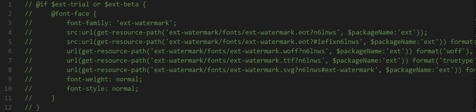
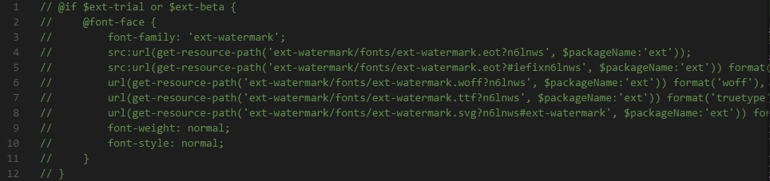
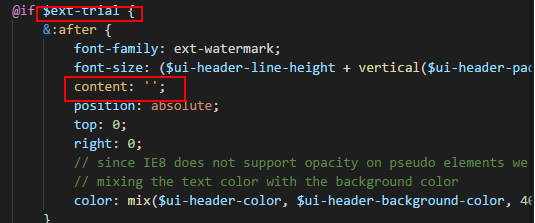

用ext6.2.1-trial版本生成的应用程序title层使用水印的，如何去掉全局的水印？
1、更改样式文件：
D:\wwwroot\me621\ext\classic\theme-base\sass\src\Component.scss 
D:\wwwroot\me621\ext\classic\theme-base\sass\src\Component.scss

2、在主题包./ext/classic下搜索content: 'd'; ，然后更改内容

3、编译重新调试，看下视图效果